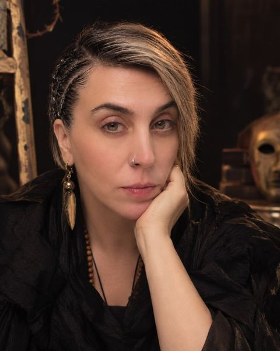
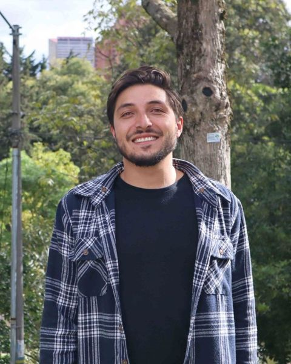
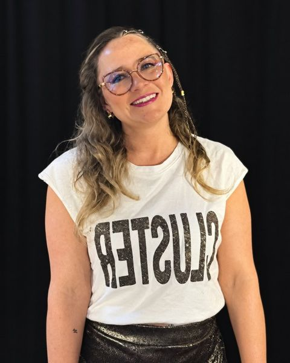
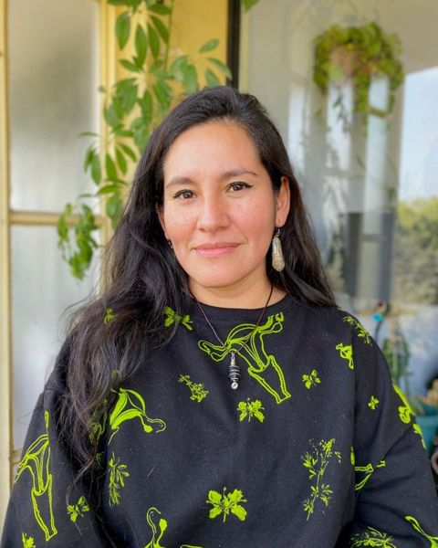
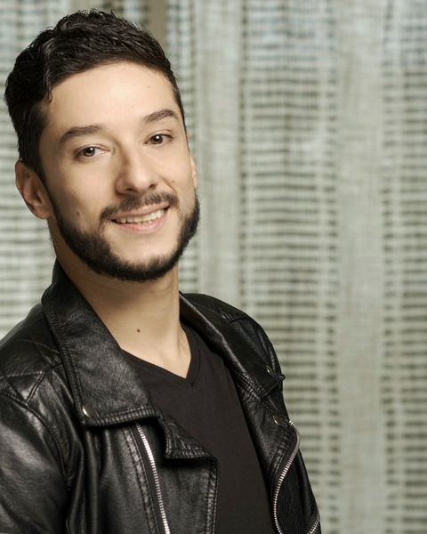
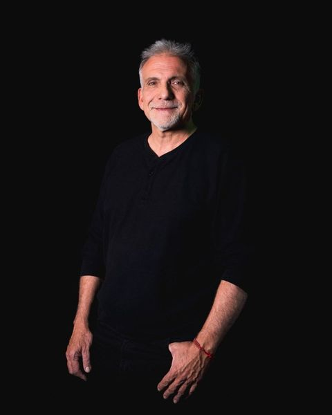
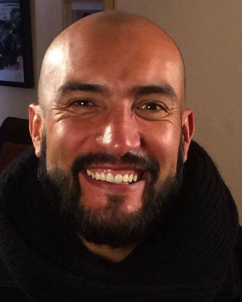
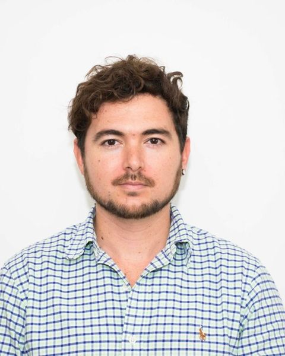
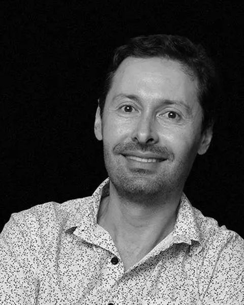

28 al 30 de octubre de 2026
Coloquio Internacional de Investigación Creación en Artes Escénicas
Miércoles y jueves en la mañana: muestras de ensamble y master classes. Viernes en la mañana: apertura, siete conferencias y cierre.
Master classes
De 9:00 a.m. a 12:00 m. Cada master class empieza a las 8:00 a.m. con una muestra de ensamble en el mismo salón.
Miércoles 28

Miércoles 28 · Salón U101Oídos morbosos: laboratorio de las perversiones de la escuchaDra. Lavinia Sabina Sorge RadovaniUniversidad de Antioquia – Facultad de Artes – Departamento de Artes Escénicas, Colombia

Miércoles 28 · Salón Biófilo 2El objeto escénico como mediador pedagógico y didáctico: de la composición escénica a la movilización de contenidosMg. Juan Sebastián Cruz Prieto y Mg. Eliana Paola Varela BarretoUniversidad Pedagógica Nacional, Colombia
Miércoles 28 · Salón Biófilo 3Cuerpos políticos en acciónMg. Liliana Enma Albornoz MuñozUniversidad Científica del Sur, PerúJueves 29

Jueves 29 · Salón U101El estudio de la escena: verdad actoral, elementos de verdad y configuración de la circunstancia imaginariaMg. Wilderman García BuitragoUniversidad de Puerto Rico, Puerto Rico
Jueves 29 · Salón Biófilo 2Taller sobre DRP (Dinámica de las relaciones proxémicas)Mg. Víctor ArrojoUniversidad Nacional de Cuyo, Mendoza, Argentina
Jueves 29 · Salón Biófilo 3Antropología y cuerpo comunicativoMg. Nilson Fernández GalindoUniversidad El Bosque, ColombiaConferencias · Viernes 30
Centro Cultural Universitario Rogelio Salmona – Cafetería 3er piso
- 8:40 a.m.Apertura VI Coloquio Internacional de Investigación-Creación en Artes EscénicasDr. Sergio Naranjo Velásquez
- 9:00 a.m.Bandera de la memoria: resistencia feminista desde el bordado colectivoMg. Liliana Enma Albornoz Muñoz
- 9:20 a.m.Procesos de investigación y creación en Matutas, Migrantes, MargináliasAmanda Paz Ambiel, Ana Júlia Torres de Oliveira, Anna Laura Babler Moro y Georgia Maria Gonçalves Ferreira
- 9:40 a.m.La convergencia entre las Artes Escénicas y el Diseño Industrial en IRUN: del objeto diseñado al dispositivo dramatúrgicoMg. Brenda Johana Galera Amaranto
- 10:00 a.m.Teatro Circular como propuesta curricular pedagógica y didáctica: composición escénica, diálogo interdisciplinar y territorioMg. Juan Sebastián Cruz Prieto y Mg. Eliana Paola Varela Barreto
- 10:20 a.m.Descanso
- 10:40 a.m.Gestión cultural y redes artísticas internacionales: creación y ejecución de un proyecto escénico y académico transnacional. Estudio de caso de “Solo Poéticas de Realidad”Mg. Wilderman García Buitrago
- 11:00 a.m.Reeducar la escucha: pedagogía sensorial y radioescena en la contemporaneidadDra. Lavinia Sabina Sorge Radovani
- 11:20 a.m.Perspectivas Sonoras: “Del territorio al aula”. La Investigación-Creación como motor de resignificación patrimonial en el ensamble de percusiónMg. Wilson Tovar Jaramillo
- 11:40 a.m.Cierre VI Coloquio Internacional de Investigación-Creación en Artes EscénicasDr. Sergio Sierra Monsalve

Apertura · 8:40 a.m.
Dr. Sergio Naranjo Velásquez
Doctor en Humanidades por la Universidad Internacional de Catalunya (Mención Cum Laude), Magíster en Estudios Teatrales por la Universidad Autónoma de Barcelona y Licenciado en Artes Escénicas por la Universidad de Caldas. Se ha desempeñado como director y actor en el grupo Hurón Teatro de Manizales y como miembro activo del grupo de investigación SARX en Barcelona. Actualmente es docente del Departamento de Artes Escénicas de la Universidad de Caldas. Su trabajo se orienta hacia la articulación entre teoría y práctica escénica, con énfasis en la investigación-creación, los estudios teatrales contemporáneos y las poéticas del cuerpo en la escena.

Cierre · 11:40 a.m.
Dr. Sergio Sierra Monsalve
Doctor en Estudios Teatrales por la Universidad Autónoma de Barcelona, mención Cum Laude. Magíster en Estudios Teatrales por la Universidad de Barcelona y el Instituto del Teatro de Barcelona. Maestro en Arte Dramático por la Universidad de Antioquia. Profesor asociado de la Universidad de Caldas, adscrito al Departamento de Artes Escénicas, donde desarrolla actividades de docencia e investigación en programas de pregrado y posgrado.